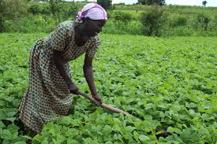
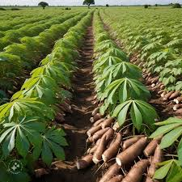
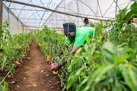
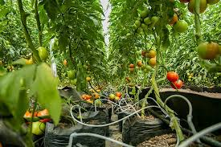
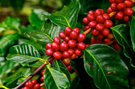
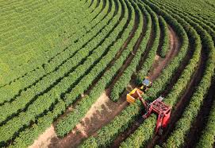
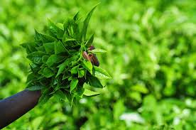
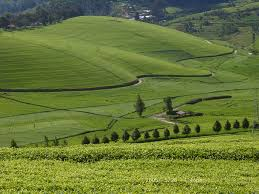
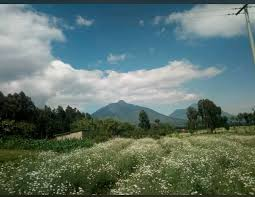
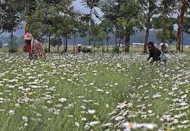

Connecting Rwanda’sAgriculture
Rwanda is a landlocked country and is commonly known for its quality Agriculture domain. My project AgriNexus will deal mainly with agriculture domain. Word AgriNexus
comes from two words Agri
which means Agriculture
and Nexus
latin word which means binding together
.
AgriNexus
means connection within agriculture domain
. There are some problems in our Agriculture field and this AgriNexus project will address some of these problems using a web application.
| No | PROBLEM | SOLUTION |
|---|---|---|
| 1 | we have One of the oldest problems in farming of the Information Gap.Small-scale farmers often don't know the current market price of their crops, leading them to sell to intermediaries at a loss. | This web application will provide a marketplace that tracks regional commodity prices and connects farmers directly consumers. The information about these prices will be provided by the government, and this will fix problem of price transparency |
| 2 | we have to deal with unproper Resource management. With fertilizer and energy prices are being to high(expensive), we have to get solutions dealing with this. For example, spraying an entire field the same way is no longer affordable. | This web application will integrate with satellite imagery to provide "heat maps" of a farm. A farmer logs into the website to see exactly which square meter of their land needs nitrogen or water or any other nutrient. In case of supplying all the field, farmer can supply the nutrient to that small part in need (according to the example provided above). |
| 3 | we will need digitalized market of agriculture products. Modern consumers need to know exactly where their food came from and how it was grown. These consumers may need to be clients to the provider because of his fresh production or need to know how they can grow that product being consumed. | This web application will require that each product on its market will have a QR code so that A buyer scans a QR code on product and get information about the product like harvest time and information about the producers. |
| 4 | we have seen that many people who have studied Agriculture in their university do not make it as a career, they deviate to other domains and this makes a shortage of labours. And other problem is that the ones in shortage do not work efficiently (lack of Team coordination). | This web application will provide a connection area for the labours and Employers. And will have a "Farm Operating System" where supervisors can assign tasks using a map.so the few workers available are used effectively. |
| 5 | Climate change has made traditional planting calendars unreliable. In 2026, farmers are facing unpredictable droughts and new pest infestations. This creates some new complicated challenges like diseases attacking crops and other non-friendly conditions. | This web application will provide an AI-driven advisory (specialised on Agriculture) that you can tell the condition your farm or crops are in and that AI can advise you what to do. And this AI advisory can provide Alerts of weather forecast to the web application users. |
Rwanda has diverse elevations, fertile volcanic soils, and reliable bimodal rainfall allow farmers to cultivate a wide range of crops across the country hills and valleys. From subsistence staples grown on terraced slopes to premium export commodities produced in highland estates, Rwanda farming reflects both food security priorities and international market opportunities. Crop selection often depends on altitude, soil composition, and access to markets, making agricultural production highly localized and region-specific throughout the country.
Staple crops form the dietary backbone of Rwanda. Beans are cultivated nationwide and are a primary protein source in rural households, frequently intercropped with maize on hillside terraces. Maize production has expanded significantly in districts such as Nyagatare and Kayonza, where relatively flatter land supports larger plots. Cassava thrives in warmer lowland areas, including parts of the Eastern Province, providing drought-resistant food security. Irish potatoes are especially dominant in the volcanic highlands of Musanze, Burera, and Nyabihu, where cooler temperatures and rich soils produce some of the country’s highest yields. Sweet potatoes are also widely grown and serve as an important staple in both rural and peri-urban communities.


Vegetable farming plays a critical role in supporting urban markets, particularly in Kigali and secondary cities such as Musanze and Rubavu. Tomatoes, onions, carrots, cabbage, green peppers, and leafy greens are widely cultivated in marshlands and irrigated valley bottoms. Districts like Bugesera and Rwamagana have become important suppliers of fresh produce due to irrigation development. Many farmers use small-scale greenhouse structures to stabilize production during heavy rains, ensuring consistent supply to local markets. Vegetable cultivation not only enhances household nutrition but also provides frequent income through regular market sales.


According to the National Agricultural Export Development Board (NAEB), Rwanda’s agricultural sector serves as the vital engine of its national economy, with a strategic focus on high-value "traditional" exports and a rapidly diversifying portfolio of non-traditional commodities. Coffee, tea, and pyrethrum remain the country's primary foreign exchange earners, benefiting from the unique volcanic soils and high altitudes of the "Land of a Thousand Hills" to command premium prices on the global market. In recent years, the government has aggressively expanded the horticulture sector—including the export of French beans, avocados, and flowers—to capitalize on international demand and build a more resilient, export-oriented economy. These crops not only provide a crucial source of hard currency but also support the livelihoods of hundreds of thousands of smallholder farmers, making agriculture the cornerstone of Rwanda’s journey toward sustainable economic development.
Rwanda’s traditional export pillars—coffee, tea, and pyrethrum—form the historical and economic bedrock of the nation’s agricultural trade, consistently accounting for the largest share of foreign exchange earnings. These three commodities capitalize on Rwanda’s unique geography, where high-altitude mountain ranges and nutrient-rich volcanic soils create ideal conditions for producing premium-grade crops that are highly valued on the international market. Beyond their role in balancing the national trade deficit, these sectors serve as critical engines for rural development, providing stable incomes and employment for hundreds of thousands of smallholder farmers and cooperative members across the country. By focusing on quality over quantity, Rwanda has successfully branded these traditional pillars as "specialty" products, ensuring they remain resilient and competitive in a fluctuating global economy.
Coffee is Rwanda’s leading agricultural export and a major driver of national economic stability, hitting a historic record of $148.6 million in revenue in 2025. The industry supports over 400,000 smallholder farming households, primarily growing high-quality Arabica beans that are processed in over 300 washing stations across the country. Because the government has focused on "specialty coffee" rather than bulk volume, Rwandan beans fetch premium prices in North America, Europe, and Asia, making it a critical tool for poverty reduction and increasing the income of rural families.


Tea is a consistent and high-performing export that generates nearly $100 million annually, prized globally for its high quality and distinct flavor profile due to Rwanda's volcanic soils and high altitudes. Unlike many seasonal crops, tea provides a year-round income for farmers and workers in the Northern, Western, and Southern Provinces, where large estates and cooperatives dominate the landscape. Rwandan tea is a staple at the Mombasa Tea Auction, where it frequently commands the highest prices in the East African region, making it a reliable pillar of the country's trade balance.


Rwanda is the world’s second-largest producer of pyrethrum, a natural insecticide extracted from chrysanthemum flowers grown in the rich soils of the volcanic Virunga region. This niche but high-value crop accounts for roughly 15% of the global market share, providing a specialized export that serves the international organic pesticide and pharmaceutical industries. By focusing on sustainable cultivation in districts like Musanze and Nyabihu, Rwanda has turned pyrethrum into its third most important traditional cash crop, offering a vital and unique revenue stream that diversifies the agricultural sector away from beverages alone.


Feel free to fill our form to be able to recieve the updates
Phone:+250737448038
E-mail:jambosonga19@gmail.com
Po.Box:100,Ruhengeri